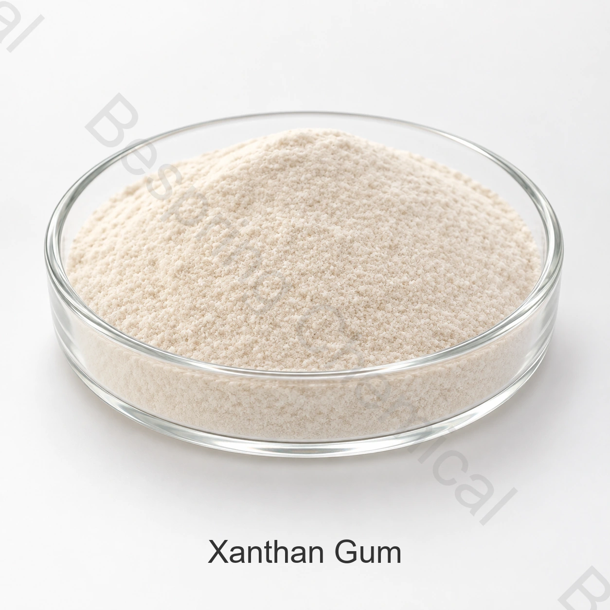

Bebidas
Suporte suspensão e viscosidade com bom desempenho em diferentes condições de pH e processamento.
Ingrediente de grau alimentício · Hidrocoloide, espessante e estabilizador · INS 415
A goma xantana é um hidrocoloide derivado da fermentação usado para criar viscosidade, suspensão e estabilidade de emulsão em uma ampla gama de sistemas alimentares.

Imagem do produto · confirme grau e embalagem na compra
Informar os alimentos pretendidos, os limites-alvo, os métodos de ensaio, a quantidade e o destino.
Documentos de qualidadeKosher, Halal e ISO
Embalagem padrão25 kg saco; saco de papel ou exigência do cliente
Carga do contêiner80 malhas: 20/18 MT; 200 malhas: 18/16 MT sem/com paletes por 20GP
LoteEspecificações atuais e COA a pedido
Identidade do produto
A goma xantana de grau alimentício é um polissacarídeo de alto peso molecular produzido por fermentação com Xanthomonas campestris. FAO/JECFA identifica-a como INS 415 e CAS 11138-66-2.
A adequação comercial depende do grau exato, fonte, método de teste, aplicação e regras de mercado-alvo. A especificação atual assinada e o COA do lote regem uma transação.
Avaliação da aplicação
Estas são áreas de formulação, não aprovações universais. Confirme o uso autorizado, dosagem e desempenho técnico para o produto acabado.
Suporte suspensão e viscosidade com bom desempenho em diferentes condições de pH e processamento.
Melhorar a gestão da água, aderência e textura; validar interações com amidos e proteínas.
Use como estabilizador ou espessante onde a fórmula e o processo selecionados são compatíveis.
Avalie o rendimento, suspensão e textura em testes de formulação em escala piloto.
Especificações comerciais
A tabela apresenta limites comerciais de referência para comparação de propostas. Os resultados de cada lote e os requisitos do mercado-alvo devem ser avaliados separadamente.
Deslize ou use o teclado para ler todas as colunas
| Parâmetro | Especificação | 80 malhas | 200 malhas |
|---|---|---|---|
| Tamanho da malha | ≥80 | Disponível | Disponível |
| Perda por secagem | ≤13.00% | Atende | Atende |
| pH | 6.0–8.0 | Atende | Atende |
| Cinzas | ≤15.00% | Atende | Atende |
| Valor de cisalhamento | ≥6.50 | Atende | Atende |
| Viscosidade | 1.200–1.700 mPa·s | Atende | Atende |
| Ácido pirúvico | ≥1.5% | Atende | Atende |
| Nitrogênio total | ≤1.5% | Atende | Atende |
| Metais pesados | ≤ 20 ppm | Atende | Atende |
| Chumbo (Pb) | ≤2 ppm | Atende | Atende |
| Número total de placas | ≤2.000 UFC/g | Atende | Atende |
| Coliformes | Não detectado em 5 g | Atende | Atende |
| Bolores e leveduras | ≤500 UFC/g | Atende | Atende |
| Salmonella | Não detectado em 10 g | Atende | Atende |
Identidade e especificação: A goma xantana é um polissacarídeo de fermentação de massa molecular variável; C35H49O29 não define uma molécula única do produto. Compare os graus pela viscosidade, concentração de ensaio, granulometria e hidratação, usando métodos equivalentes.
Apoio à qualificação
Solicitar a especificação atual assinada ou TDS, SDS, métodos de ensaio e COA representativo ou lote.
Verifique documentos Kosher, Halal e ISO para o grau exato, fonte e local de fabricação.
Consulte Especificações da goma xantana FAO/JECFA e verifique separadamente os requisitos do mercado-alvo.
Armazenamento e manuseio
Perguntas do comprador
Bebidas, padaria e molhos, gelatinas e alimentos enlatados, Pescados e frutos do mar e processamento de carne são áreas comuns de formulação. Uso legal, dosagem e desempenho devem ser confirmados para o mercado de alimentos acabados e destino exato.
A embalagem fornecida é de 25 kg saco; saco de papel ou exigência do cliente. A quantidade mínima de referência é de 500 kg.
Solicitar a especificação atual assinada ou TDS, SDS, COA representativo ou lote, métodos de ensaio e certificados de grau alimentício aplicáveis para o local de fabricação exato e grau.
Informe a aplicação alimentar pretendida, especificação do alvo, métodos de ensaio, quantidade, embalagem, destino, preferência de paletes e data de entrega exigida.
Ingredientes relacionados
Compare identidade, especificação e aplicações para selecionar o ingrediente adequado.
Compare identidade, especificação e aplicações para selecionar o ingrediente adequado.
Compare identidade, especificação e aplicações para selecionar o ingrediente adequado.
Compra orientada por especificação
Informar aplicação, grau alvo e especificação, quantidade, embalagem, destino e documentos necessários.
Informe o grau e o mercado de destino para confirmar os documentos disponíveis para seu pedido.
Uma referência externa não é um certificado de lote nem uma especificação da Bespring.